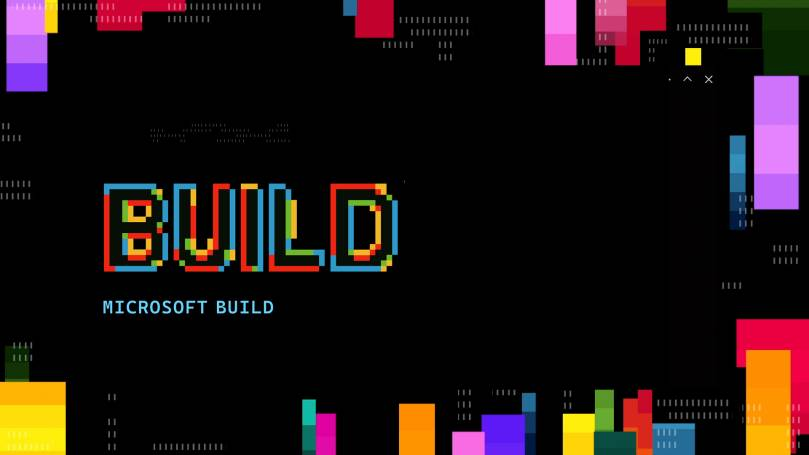
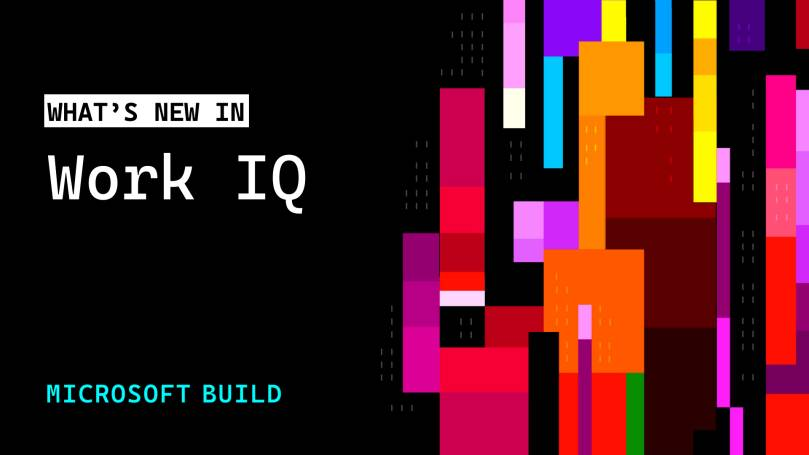
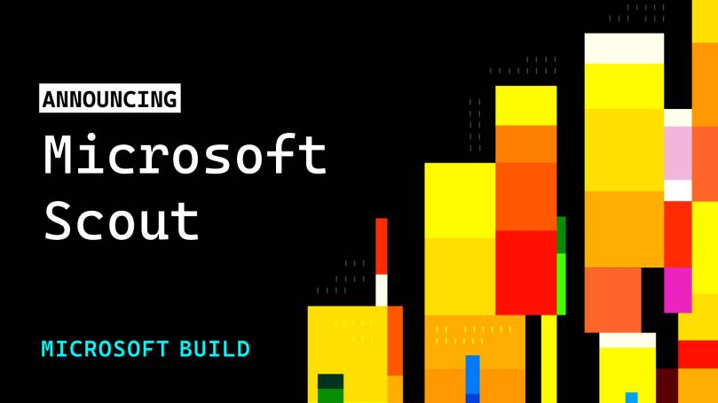
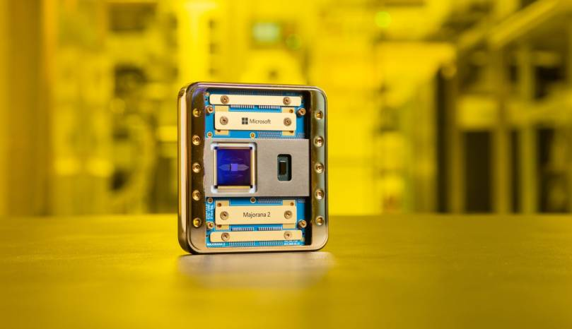

If you have sat through a Microsoft keynote more than once, you know the pattern: a wall of product names, a couple of demos that feel like magic, and then weeks of work figuring out what is actually shipping versus what is a sizzle reel. Build 2026 (San Francisco, June 2–3) was the most agent-dense keynote Microsoft has ever given — seven in-house models, a whole context layer, a brand-new category of agent, a containment story that reaches from silicon to cloud, and a concept for hardware that runs agents instead of apps.
This post is the map I wish I’d had on the morning of June 2. I’ll walk every major announcement, explain each one the way I’d explain it to a colleague (not the way the press release phrases it), and — because that’s the job most of us actually have — call out what it means for whoever has to deploy, govern and secure this stuff. It is a round-up, not a feature comparison, and I’ll flag clearly what is generally available, what is preview, and what is still just a slide.

If you only have two minutes, Microsoft’s own recap is the fastest way in:
The three themes to anchor on
Microsoft framed everything around three ideas, and they’re worth holding onto because they explain why each product exists: intelligence that’s truly yours (your context plus the world’s knowledge, under your governance), the full stack built your way (silicon to OS to cloud, model-agnostic), and what comes next (agents moving from writing code to advancing science). Strip away the marketing and the throughline is ownership: the bet that the differentiator is no longer access to a smart model — everyone has that now — but whether your business context, data and workflows become a system you own rather than value that quietly leaks back to a model maker.
Keep that lens on as we go. Almost every announcement below is a building block for one sentence: agents that know you, your business, and the world.
Microsoft IQ — the context layer agents were missing
The single most important announcement, and the least flashy. Microsoft IQ (generally available across GitHub Copilot, Microsoft Foundry and Copilot Studio) is a context layer that grounds agents in both enterprise knowledge and world knowledge. In plain terms: until now an agent was brilliant but amnesiac — it didn’t know your org chart, your projects, or where the real answer actually lived. Microsoft IQ is the plumbing that fixes that (I unpacked the idea in detail when it first appeared as the intelligence layer), and it comes in four parts.

1. Work IQ — how work actually happens
The workplace intelligence layer: people, emails, documents, meetings across Microsoft 365 — and crucially how they connect. The detail that matters for builders is that the Work IQ APIs become generally available on June 16, giving programmatic access to that graph. This is the difference between an agent that can answer “what’s our PTO policy” and one that knows this deal is stalled because that person hasn’t replied to that thread.
2. Fabric IQ — your structured data, one semantic layer
A shared semantic foundation over your structured business data in Microsoft Fabric. Translation: instead of every agent re-learning what “active customer” or “net revenue” means, there’s one agreed definition it can reason over. This is the boring-but-load-bearing work that decides whether agent answers are consistent or quietly, confidently wrong.
3. Foundry IQ — retrieval planning across everything
Foundry IQ ties the others together and plans where the right answer should come from — your enterprise knowledge or the live web. Think of it as the dispatcher: a question comes in, and it decides whether to look in your documents, your structured data, or the open internet.
4. Web IQ — fast, fresh grounding from the web
New at Build: an AI-first, model-agnostic, MCP-native web search stack that returns relevant passages at roughly 2.5x the speed of the next best alternative. The MCP-native part is the tell — Microsoft is standardising on the Model Context Protocol as the way agents pull in outside knowledge, which means the same plumbing works whether the agent is Microsoft’s or yours.
What it means for you: this is the layer that makes every other agent useful, and it’s also the layer that should make a security team sit up. The moment agents can traverse your Work IQ graph, “who can this agent see” becomes the same hard question as “who can this person see” — except now it scales to thousands of automated identities that never take a holiday.
The MAI models — seven new in-house models
Microsoft’s AI Superintelligence Team shipped a family of seven first-party models, and the strategic message underneath them is “long-term self-sufficiency” — all seven were trained from scratch with zero distillation, meaning none of them lean on the outputs or architecture of OpenAI’s or anyone else’s models.
The headliner is MAI-Thinking-1, Microsoft’s first reasoning model: a mid-sized model with 35 billion active parameters (around a trillion total in a Mixture-of-Experts layout) and a 256K context window, trained on clean, commercially licensed data. Microsoft’s own framing — independent raters preferring it to Sonnet 4.6, matching Opus 4.6 on SWE Bench Pro coding, and claiming roughly 10x the token efficiency of GPT-5.5 — is a vendor claim, so treat it as one. The more interesting point is the positioning: mid-sized, low token cost, built for multi-step instructions and long-context reasoning. It’s on Foundry in private preview.
The rest of the family: MAI-Image-2.5 and a Flash variant (now live in PowerPoint, rolling out in OneDrive, landing on Foundry, and currently sitting around #3 on the public text-to-image arena), MAI-Transcribe-1.5 (state-of-the-art across 43 languages), MAI-Voice-2 and its Flash variant (15+ additional languages), and MAI-Code-1, an inference-efficient coding model now in GitHub Copilot and VS Code. Crucially, Microsoft also made MAI models available on Fireworks AI, Baseten and OpenRouter, and brought Fireworks AI onto Foundry.
What it means for you: the strategic message isn’t “Microsoft has its own GPT now.” It’s model diversity as a platform principle — first-party MAI models sitting next to OpenAI and others, with Azure governance and data residency regardless of which one you pick. For anyone planning architecture, that’s explicit permission to stop betting the whole stack on a single model vendor.
Scout & Autopilots — a new category of agent
This is the announcement people will still be talking about in six months. Microsoft introduced a new category called Autopilots: always-on agents that run autonomously, with their own identity, and act on your behalf without being prompted each time.

Microsoft Scout is the first one. It lives across cloud, desktop and web; connects to Teams, Outlook, OneDrive and SharePoint; and works across your chats, email, calendar and contacts. You talk to it in Teams and extend it through a desktop app to your browser, local resources and MCP servers. Day-to-day it does the coordination glue-work: scheduling across time zones, flagging important meetings, prepping materials, blocking focus time for upcoming deliverables, and spotting stalled decisions before they become blockers. Over time it builds context through Work IQ — learning how you work and what you care about. It’s built on OpenClaw, the open-source platform for local AI agents, with policy-conformance work contributed back upstream.
Here’s the part I care about most, and where Microsoft clearly did its homework. Every Scout agent runs under its own governed Entra identity — not a shared, anonymous service account — so its actions are attributable to a known actor your directory already understands. Credentials are scoped to the task at hand, redacted from logs and diagnostics, sensitive actions can require human sign-off, and Microsoft Purview policies (sensitivity labels, DLP) are enforced in the moment, before anything is sent or shared.
Availability is the reality check: Scout is an experimental release through the Frontier program. Access requires Frontier enrollment, Intune policy configuration, and an opt-in attestation, after which users with a GitHub Copilot license can install it. So no, it’s not landing in your tenant next week — but the fact that the path to it runs through Intune tells you exactly where this gets managed.
What it means for you: “agents with their own identity” is the line that changes endpoint and identity management. We are about to manage a population of non-human identities that log in, hold permissions, and act continuously. Conditional Access, lifecycle, access reviews, audit — all of it now has to account for actors that never sleep and never get offboarded by HR.
Governance — the part that decides whether any of this is usable
Microsoft spent real keynote time on control, which is the right instinct. Agent 365 for local agents extends Entra, Defender and Purview into a single control plane to observe, govern and secure agents regardless of where they’re hosted or what framework they’re built on. That last clause is the whole point — it’s meant to govern the third-party and open-source agents you didn’t build, not just Microsoft’s own. (If you want the deeper split between “Agent 365” and the older “Microsoft 365 Agents” naming, I wrote a separate field guide on exactly that confusion.)
Around it sit two open-source projects worth knowing by name: ASSERT (Adaptive Spec-driven Scoring for Evaluation and Regression Testing) for policy-driven safety evaluation, and the Agent Control Specification, a standard for where and how to apply controls inside the agent loop. There’s also Codename MDASH, a multi-model agentic security system that deploys 100+ agents to hunt exploitable bugs by reasoning about data flow and exploit chains, then delivers fixes in the Defender portal. And Frontier Tuning (private preview) applies reinforcement learning inside your compliance boundary, so agents learn how your business actually works without your data ever leaving it.
What it means for you: this is Microsoft acknowledging that the hard problem of the agentic era is not capability, it’s control at scale. If you run security or compliance, Agent 365 and the Agent Control Specification are the two names to track — they’re the difference between “we have agents everywhere” and “we can prove what every agent did, and that it was allowed to.”
If you want the firehose version of the day, this 16-minute official recap covers 20+ announcements back to back:
The full stack — silicon, OS and cloud
A dense block of developer-platform news, grouped by where it sits in the stack:
Silicon — Surface RTX Spark Dev Box. A physical machine for sustained local AI work: up to one petaflop of compute and 128 GB unified memory, able to run up to 120B-parameter models with up to a million tokens of context locally, no cloud GPU rental. WSL2 with native GPU passthrough, CUDA, VS Code and Copilot come pre-configured. US availability later this year. The signal: serious AI development is moving back onto the desk, not only into the cloud.
OS — Windows as an agent-native runtime. Microsoft Execution Containers (MXC), in preview, let developers and IT admins create OS-enforced sandboxes for agents — describe the requirements once, and Windows enforces them everywhere the agent runs. OpenClaw on Windows already uses MXC, and NVIDIA’s runtime builds on it with policy management and PII obfuscation. This is the containment story for agents that run on actual endpoints, not just in a browser tab.
Cloud — hosted agents in Foundry Agent Service (preview): instant-on sandboxes per session, isolated execution, persistent memory, elastic scale. Microsoft’s analogy is apt — “the primitive for agents the way containers were for cloud-native apps.”
Developer flow. The GitHub Copilot app (preview) is a native desktop experience that orchestrates multiple agent sessions in parallel, each on its own git worktree. Rayfin (preview) brings managed backend-as-a-service to Microsoft Fabric via GitHub workflows; a Replit integration speeds prototype-to-production; and Azure HorizonDB, a fully managed PostgreSQL service, claims 3x+ the throughput of comparable self-managed setups.
What it means for you: the through-line is containment. From MXC on the endpoint to per-session sandboxes in the cloud, Microsoft is building the walls agents run inside. That’s the prerequisite for letting autonomous code touch real systems — and it’s where the management surface for agents will actually live.
Project Solara — devices that run agents, not apps
The most futuristic announcement, and explicitly a concept rather than a product. Introduced by technical fellow Stevie Bathiche, Project Solara is a chip-to-cloud platform for “agent-first” devices — hardware built to run AI agents instead of traditional applications. It runs on MDEP (Microsoft Device Ecosystem Platform), a lightweight enterprise OS built on the Android Open Source Project, with management and security through Intune and Entra ID baked in from the start, plus an agent shell and “just-in-time UI” that adapts the interface to whatever device the agent runs on.
Two reference designs were shown: a wearable badge (touchscreen, fingerprint sensor for Windows Hello for Business, far-field mic array, side camera, Wi-Fi/Bluetooth/GNSS/5G, Qualcomm wearable silicon) and a desk companion (touchscreen, dual far-field mic array, UWB presence sensor, MediaTek silicon, facial-recognition sign-in — and, plugged into a display over USB-C, it becomes a Windows 365 cloud-PC thin client). Both deliberately have no app store, no browser-first experience, no traditional desktop. Microsoft will pilot with AccuWeather, Best Buy, CVS Health, Levi’s and Target in the coming months.
What it means for you: ignore the hardware for a second — the important word is Intune. Microsoft is signalling that even a brand-new, app-less device class gets managed through the same identity and endpoint-management plane you already run. Whether or not these exact gadgets ship, the management model is the real bet, and it’s a familiar one.
Science and quantum — the long game
Two announcements aimed past the enterprise. Microsoft Discovery is generally available: an agentic AI platform for the full science workflow, already used by BHP (copper-leaching solutions in months not years), Syensqo (semiconductor R&D) and GSK (drug discovery). A free local Discovery app is in preview and needs only a GitHub Copilot account.

And Majorana 2, Microsoft’s next-generation topological quantum chip, claims an average qubit lifetime of 20 seconds (up to a minute), 1,000x higher reliability than the prior generation, and a path to a million qubits — with Microsoft now targeting a scalable quantum machine by 2029, half its original timeline. The chip swaps Majorana 1’s aluminium for lead and was itself refined using Microsoft Discovery. Worth your honesty filter: as with Majorana 1, parts of the physics community remain sceptical of the underlying claims, so file this as a milestone Microsoft is asserting, not a settled result.
What it means for you: nothing this quarter. But the quantum timeline is exactly why “harvest now, decrypt later” and post-quantum cryptography planning stopped being theoretical. If you own security strategy, the Majorana 2 progress — sceptics and all — is your reminder to put PQC migration on a real roadmap.
Cheat sheet — what shipped vs. what’s a slide
| Announcement | What it is | Status |
|---|---|---|
| Microsoft IQ (Work / Fabric / Foundry) | Context layer grounding agents in your data | GA now |
| Work IQ APIs | Programmatic access to the workplace graph | GA June 16 |
| Web IQ | Fast, MCP-native web grounding (~2.5x faster) | New at Build |
| MAI-Thinking-1 | First-party 35B-active reasoning model (256K ctx) | Private preview (Foundry) |
| MAI-Image / Voice / Transcribe / Code | First-party model family | Rolling out (PowerPoint, Copilot, VS Code, Foundry) |
| Microsoft Scout (Autopilots) | Always-on agent with its own Entra identity | Experimental via Frontier (needs Intune) |
| Agent 365 for local agents | Single control plane for any agent | Announced |
| MXC / hosted agents in Foundry | OS- and cloud-enforced agent sandboxes | Preview |
| GitHub Copilot app, Rayfin, HorizonDB | Developer + platform tooling | Preview |
| Surface RTX Spark Dev Box | Local 1-petaflop AI machine, 128 GB | Later this year (US) |
| Project Solara | Agent-first device platform on MDEP | Concept / pilots |
| Microsoft Discovery | Agentic science platform | GA (local app: preview) |
| Majorana 2 | Next-gen quantum chip | Research milestone (contested) |
The approach I actually use
Faced with a keynote this big, I triage announcements into three buckets, and I’d suggest the same:
- Adopt-track now (GA, low risk): Microsoft IQ and the Work IQ APIs. This is foundational and it’s shipping — understanding the context graph is time well spent regardless of which agents you eventually run.
- Pilot-track deliberately (preview, real value): Agent 365, MXC, the GitHub Copilot app, MAI models on Foundry. Stand up a sandbox, learn the governance model, but don’t bet production on preview SLAs.
- Watch-track (concept / experimental): Scout, Project Solara, Majorana 2. Read every release note, run a Frontier trial if you qualify, but plan as if timelines will slip — because they do.
The deciding question for anything in bucket 2 or 3 is always the same: can I attribute and govern what this agent does before I let it touch production? If the answer is no, it stays a demo.
Pitfalls I now avoid
- Treating agent identities like app registrations. They’re not. An Autopilot acts continuously under its own Entra identity — give it the lifecycle, access reviews and Conditional Access you’d give a privileged human, not the neglect you give a forgotten service principal.
- Confusing “generally available” with “ready for your tenant.” Half of this is preview or Frontier-gated. Map each item to its real status (see the cheat sheet) before anyone promises it to leadership.
- Skipping the governance layer because the demos are shinier. Agent 365 and Purview enforcement are the unglamorous prerequisites. Stand them up before the agents, not after an incident.
- Reading vendor benchmarks as ground truth. “Preferred over Sonnet 4.6,” “2.5x faster,” “1,000x more reliable” — useful signals, but test on your own workloads before you architect around them.
Where this is heading
Build 2026 makes the direction unambiguous: Microsoft is turning the agentic era into a platform, and identity is the spine that holds it together. Every headline — Scout’s own Entra identity, Agent 365’s control plane, Project Solara managed through Intune — points to the same place: the next five years of endpoint and identity management are about governing a workforce that is part human and part agent. The teams that win won’t be the ones with the cleverest model; they’ll be the ones who can answer “what did that agent just do, and was it allowed to?” without flinching.
For the full firehose, Microsoft’s own Build 2026 live blog and the opening keynote are the primary sources. Everything above is my read on what matters — now I’d love to hear which of these you’re actually planning to pilot.